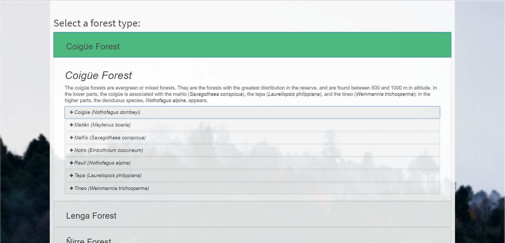

Maps

Motive
The Huilo Huilo National Reserve sought a digital version of the pamphlet of trees that they were handing out to tourists. Aside from being environmentally irresponsible, they found interest in these pamphlets was severely lacking. My task was to design a web version of the flashcard pamphlet for tourists to use.
How
After meeting with the Webpage Manager of the Huilo Huilo Foundation, I was instructed to begin developing the website using Drupal CMS. I had considered using a service like WordPress, but the Manager preferred Drupal for this project.
Getting Started
I began this project by dissecting the tree pamphlet, a verbose brochure of information that likely has never been read. I narrowed down the information in the pamphlet to categories and subcategories, such as Forest, Tree Name, and specific details about the tree.
Overcoming Problems
This was definitely a case in which the amount of data posed a problem in how the informatioon could be displayed. To overcome this, I decided to try out a Bootstrap Accordion style display, which I thought really resembled flash cards. This made it easy to show lots of trees and forest information at once, but also hide the plentiful amount of details for each tree.
Final Product
I am definitely pleased with how this Biosphere website turned out. With the assistance of content translators and editors, I managed to convert this once-lengthy brochure into an approachable website for the everyday user. The accordion style display proves to be easy and intuitive to use.
Takeaways
- Thinking about the interests of the target audience for this Biosphere website was super significant. What did the tourists to the mountains of Neltume want to see in this online pamphlet? After rounds of development, I realized that my initial concept was too directed towards the layperson, lacking some significant scientific details that the tour guides of the forests would definitely speak to.
- My goal in creating this website was to meet all of the objectives laid out by the Huilo Huilo Foundation, who I was working for: convert this outdated pamphlet into something more approachable. The purpose of the project is as a supplementary resource for those interested in further learning about the trees; I believe the design of this website is a perfectly acceptable design to achieve this goal.